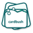

CardBushBrowser Use · Chrome / Edge
正在读取连接状态…
等待 CardBush 会话…
在 CardBush 的 Browser Use 设置中选择当前浏览器并生成配对码，粘贴到此处。配对不授予页面访问权限。重启浏览器后需点击连接；移除扩展请使用 Chrome 或 Edge 扩展管理页。

在 CardBush 的 Browser Use 设置中选择当前浏览器并生成配对码，粘贴到此处。配对不授予页面访问权限。重启浏览器后需点击连接；移除扩展请使用 Chrome 或 Edge 扩展管理页。